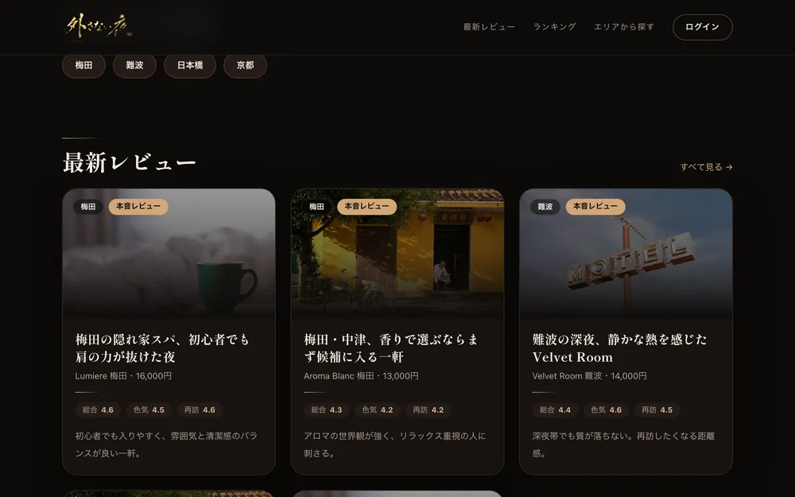

01
お店の“顔”になる、
Webサイト
デザインから実装・公開まで、ひとりで完結します。下は実際に公開して運用中のレビューサイト。スマホでも崩れず、毎日コンテンツが増える仕組みごと作っています。

02
24時間、お店の代わりに
答えるLINE
「何時まで？」「予約できる？」——よくある質問や予約受付を、AIが自動で応答します。飲食店・美容室・サロン・社内ヘルプデスクまで、用途に合わせてゼロから組みます。
今日って何時までやってますか？
本日は22時まで営業しています。ラストオーダーは21時30分です。
2名、20時で入れます？
ご案内できます。お名前だけお伺いしてもよろしいですか？
03
毎日の面倒を、
コードで消す
ネット通販の市場価格を24時間自動で集め続ける仕組みや、紙の書類をデータに変換するツールを自作して動かしています。「毎日やってるアレ、手作業なんですよね」が、いちばん得意な相談です。
04
実在しない人物を、
つくって運用
この9枚、全員同一人物で、全員実在しません。同じ顔をどんな場面でも生成し、SNSアカウントとして実際に運用しています。お店のイメージキャラやモデル撮影の代わりにも。

大阪で、WebとAIと自動化をひとりでやっています。「これってできる？」くらいの雑な相談が、いちばん好きです。
飲みの席で聞きそびれたことは、こちらへ。気軽な相談で大丈夫です。